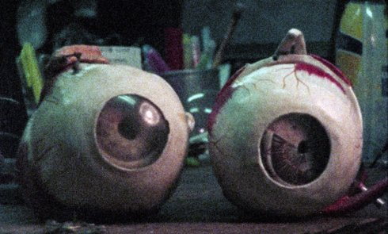

Das Gestell

Philip Widmann
|
30 min – Super 8 on HD – Japanese, German B+S+T: Philip Widmann – With Naoki Ishida, Fumiake Onodera Website Philip Widmann
|
Saturday 13 oct 6.30 pm werkstattkino
A Japanese philosopher writes a letter to a famous German colleague. He asks the German to advise the Japanese people how to deal with the permeation of modern life by technology. More than 50 years later, the same issues are being discussed among academics and aspiring engineers. Resorting to biographical trivia, mythological histories and the recounting of dreams is not helping them to see these issues any clearer. In the grainy images of the film, landscapes from an uncertain time appear, occasionally flooded by water and a cacophony of brass players. The uncontrollable finds its ways into a world that tries to minimise risks and thus creates new dangers.
Philip Widmann born in 1980 in West Berlin, studied Cultural Anthropology, Ethnology, and American Studies at the University of Hamburg and attended the Documentary Film Class at the Hamburg University of Fine Arts. His film and video works have been shown in art spaces and film festivals internationally.
|
| Films Destination Finale 2008 (4. UX) – Die Frau des Fotografen 2011 – Szenario 2014 (9. UX) – Fictitious Force 2015 (10. UX) – Ein Haus in Ninh Hoa 2016 (11. UX)
|